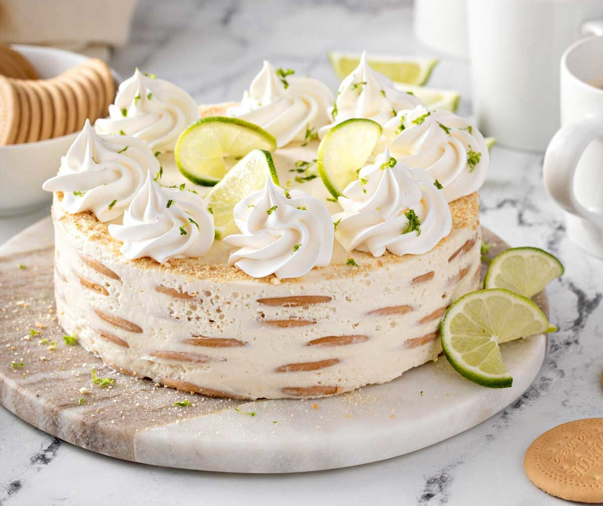

¡Bienvenido a Recetas Caseras!
Explora nuestras recetas favoritas y cocina como un experto desde casa con todos los ingredientes, pasos y más.
“Cocina fácil y deliciosa para cualquier momento”.
Explorar RecetasReceta del día
Una delicia cítrica y cremosa, ideal para cualquier ocasión. ¡Este pay de limón se prepara sin horno y conquista a todos con su sabor fresco y textura suave!
Descubre cómo preparar este delicioso postre, el pay de limón.
Ver receta